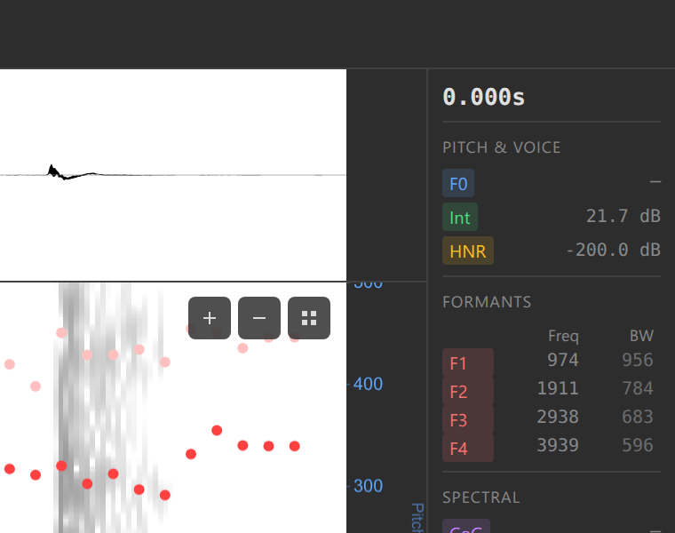

3. Acoustic Analysis
Enable and interpret acoustic overlays
Overview
Ozen-web can display multiple acoustic features overlaid on the spectrogram:
- Pitch (F0) — Fundamental frequency (blue line and dots)
- Formants (F1-F4) — Resonance frequencies (red dots)
- Intensity — Loudness over time (green line)
- HNR — Voice quality (harmonicity)
- CoG — Spectral center of gravity
- Spectral Tilt — High/low frequency balance
- A1-P0 — Nasal formant measure
In this section, you’ll learn to enable these overlays and interpret what they show.
The Overlay Controls
Look for the overlay checkboxes in the interface (usually in a sidebar or below the spectrogram).

Enabling Pitch
Pitch (fundamental frequency) is the most commonly used overlay.
Check the “Pitch” checkbox
Wait 1-2 seconds for computation (first time only)
A blue line with dots appears on the spectrogram

Spectrogram with pitch overlay Each dot represents one pitch measurement
Vertical position = frequency (Hz)
Interpreting the Pitch Overlay
- Higher on screen = higher pitch
- Lower on screen = lower pitch
- Gaps in the line = unvoiced sounds ([s], [f], [t], [k], etc., or silence) or pitch detection failures
- Smooth contours = steady pitch (often vowels)
- Sharp movements = pitch changes (intonation / tone)
Try this: Record yourself saying “really?!” and watch the pitch track follow your intonation.
Pitch is only detected in voiced segments. Consonants like [s], [f], [θ] won’t show pitch values.
Enabling Formants
Formants show the resonance frequencies that distinguish vowels.
Check the “Formants” checkbox
Red dots appear on the spectrogram

Spectrogram with formants overlay Four vertical series of dots represent F1 (lowest), F2, F3, F4 (highest)
Interpreting the Formant Overlay
Formants reveal vowel identity:
| Vowel | Appearance on Spectrogram | ||
|---|---|---|---|
| [i] peel | F1 low, F2 very high | ||
| [ʊ] pull | F1 low (but not as low), F2 low | ||
| [ɔ] Paul | F1 high, F2 low | ||
| [æ] pal | F1 high, F2 high | ||
| [ɜ˞] pearl | F1 mid, F2 high, F3 low |
Try this: Find a vowel in your audio, place the cursor in the middle, and read F1 and F2 values in the values panel. Compare to the table above.
F1 roughly corresponds to tongue height (high = low F1, low = high F1). F2 roughly corresponds to tongue frontness (front = high F2, back = low F2).
Enabling Intensity
Intensity shows loudness over time.
Check the “Intensity” checkbox
A green line appears, usually in the upper part of the spectrogram

Spectrogram with intensity overlay Height corresponds to decibels (dB)
Interpreting Intensity
- Higher = louder segments (stressed syllables, vowels)
- Lower = quieter segments (unstressed syllables, consonants)
- Drops to bottom = silence
Try this: Say a sentence with strong stress on one word. The intensity overlay will peak on the stressed syllable.
Enabling Advanced Overlays
HNR (Harmonics-to-Noise Ratio)
Measures voice quality:
- High HNR (>10 dB) = clear, modal voice
- Low HNR (<5 dB) = breathy or creaky voice
- Very low HNR = whisper or noise
- Check the “HNR” checkbox
- Orange/yellow line appears
- Higher = more harmonic (less noisy)
CoG (Center of Gravity)
Measures spectral balance:
- High CoG (>5000 Hz) = sibilants (s, sh), fricatives
- Low CoG (<3000 Hz) = vowels, sonorants
Useful for distinguishing fricatives. To really see how fricatives are different, increase “Max Freq.” to 10,000, and record the word chefs.
Spectral Tilt
Measures high vs. low frequency emphasis:
- Positive tilt = more energy in low frequencies (vowels)
- Negative tilt = more energy in high frequencies (fricatives)
A1-P0
A measure related to nasality and open quotient. Useful for advanced research.
Advanced overlays (HNR, CoG, Spectral Tilt, A1-P0) are primarily useful for specialized phonetic research. Most users only need Pitch, Formants, and Intensity.
Viewing All Overlays Together
You can enable multiple overlays simultaneously:

Enabling too many overlays at once can make the display cluttered. Start with Pitch + Formants for most tasks.
Reading Values at the Cursor
The values panel shows precise measurements at the cursor:
Enable the overlays you’re interested in (e.g., Pitch and Formants)
Place the cursor in a vowel
Read the values panel:
- Time: 0.452 s
- Freq: 1234 Hz (where you clicked)
- Pitch: 234 Hz
- Intensity: 68 dB
- F1: 523 Hz
- F2: 1987 Hz
- F3: 2743 Hz
- F4: 3543 Hz

Values panel with measurements
You can collect these measurements systematically using data points (covered in section 5).
Customizing Analysis Settings
You can adjust analysis parameters via the settings panel (if available) or config.yaml:
Pitch settings:
pitchFloor: Minimum pitch to detect (default: 75 Hz)pitchCeiling: Maximum pitch to detect (default: 600 Hz)
Formant settings:
maxFormants: Number of formants to track (default: 5)maxFormantFrequency: Analysis ceiling (default: 5500 Hz for female voices, 5000 Hz for males)
See Configuration Reference for all options.
Changing Spectrogram Max Frequency
You may want to adjust the vertical range of the spectrogram:
Find the Max Frequency dropdown (usually in toolbar)
Choose a ceiling:
- 5 kHz — Good for speech (default)
- 7.5 kHz — Includes higher formants
- 10 kHz — Full range, useful for fricatives
The spectrogram y-axis rescales
For most speech analysis, 5 kHz is sufficient. Use 7.5-10 kHz if studying sibilants or children’s voices.
Practice Exercises
- Enable Pitch only
- Find a vowel
- Place cursor in the middle
- Note the pitch value
- Enable Formants
- Identify F1 and F2 for the same vowel
- Try to guess the vowel based on formants (use the table above)
- Enable Intensity
- Find the loudest part of your audio
- Compare intensity values across different sounds
- Enable all overlays
- Observe how different overlays align
- Notice which features co-vary (e.g., intensity and voicing)
Troubleshooting
Pitch overlay doesn’t appear:
- Ensure WASM backend is loaded (check backend selector)
- Try enabling/disabling the checkbox
- Check browser console (F12) for errors
Pitch values seem wrong:
- Adjust
pitchFloorandpitchCeilingfor your speaker - Male voices: Try 50-300 Hz range
- Female voices: Try 100-500 Hz range
- Children: Try 150-600 Hz range
Formants are missing or erratic:
- Ensure you’re looking at a vowel (not a consonant)
- Try adjusting
maxFormantFrequency(5500 for females, 5000 for males) - Zoom in to see individual formant dots more clearly
Too many overlays, display is cluttered:
- Disable overlays you’re not actively using
- Use the values panel to read measurements instead of viewing all overlays
Overlays don’t update when zooming:
- This is expected for files >60s — analysis recomputes when zoomed
- Wait 1-2 seconds after zooming for the update
What’s Next?
Now that you can visualize acoustic features, let’s learn how to create annotations to mark boundaries and add labels.
Next: 4. Annotations →
Navigation: ← Previous: Exploring Audio | Tutorial Overview | Next: Annotations →